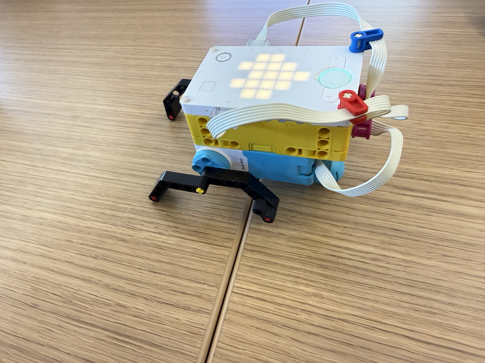
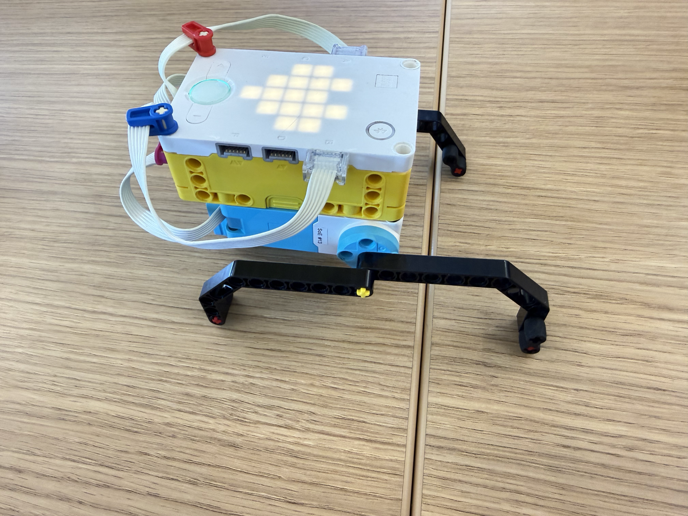
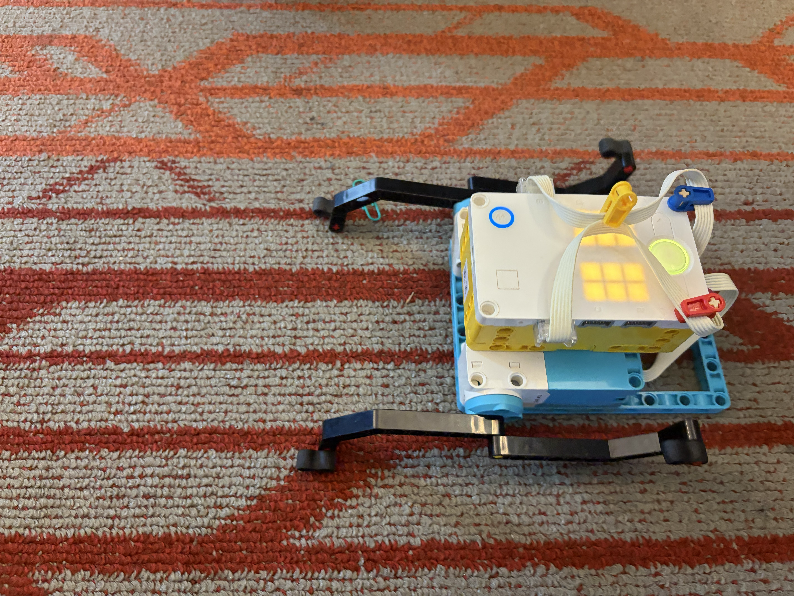

Using reinforcement learning to teach a silly walk robot to walk straight. We used two different leg setups to see how its decision-making would change as it adapted to the change. The orientation we placed the robot in determined what was “straight.” We did 25 training sessions to help it determine the best course of action. When the robot fully turns around, it receives a big negative reward, while going in the “straight” path gives it a positive reward. The videos show the robots during testing after all the training, and although it doesn’t travel in a “straight” line the whole way, it still ends up in the "straight" position from the beginning orientation.